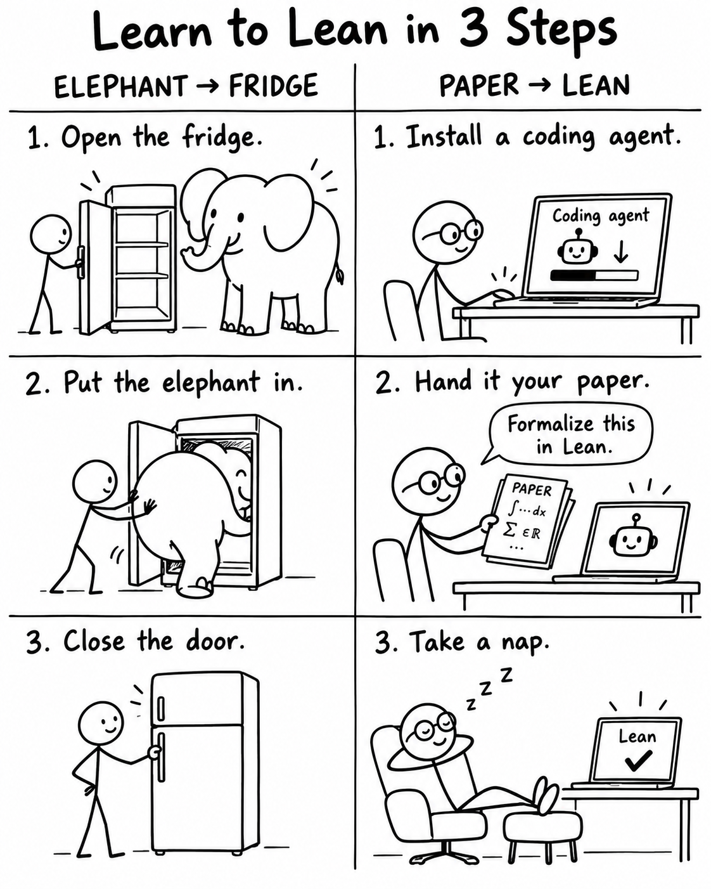

Over the past four months, mathematics has witnessed a flood of LLM breakthroughs: unit distances, non-sofic groups, the Jacobian conjecture (dimension three), complex structures on S⁶, and percolation, to name just a few. Increasingly, these developments arrive with a Lean formalization attached: a certificate for a precise formal statement, one that a machine can check.
I understand that Lean can sound intimidating, and most mathematicians were not trained as Lean experts. But… what if you could try it in just three steps?
Step 1. Install a coding agent (Codex, Claude Code, or whichever one you prefer).
Step 2. Give it your paper and ask for a Lean formalization.
Step 3. Take a nap. Come back in a few hours. With a little luck, it’ll be done!

Generated by ChatGPT Astra.
Jing Jia, Peng Zhang, and I ran a small experiment as a proof of concept. We randomly selected ten papers in mathematics and asked GPT-5.6 Sol to formalize each one from end to end.
It did it. All 10 of them.
Below, I’ll walk through the experiment, the caveats, and what I make of the results. But if you came only for the prompt, here it is:
“Please do end-to-end Lean formalization of [a paper], depending only on mathlib.”
The Experiment
Our pool consisted of papers posted to arXiv on September 1, 2026, filtered by three criteria: their primary category was math.CO, they were at most 25 pages long (to save tokens), and they had no existing formalization. From that pool, we sampled ten uniformly at random. The sampling algorithm is available here.
We then gave each paper to the agent with that single prompt and left it alone. All ten came back formalized on the first try. The complete experiment and all ten formalizations are available here.
We used GPT-5.6 Sol at Ultra reasoning effort for every formalization. For a Pro subscriber, formalizing all ten papers consumed slightly more than one week’s quota. The runs produced roughly 10 million output tokens. At equivalent API pricing, they would have cost an estimated $1,775.
This experiment was primarily a proof of concept to show where autoformalization stands today. It has quietly become something everyone can try. It is powerful, requires no prior Lean experience (we had not even installed Lean before writing the prompt), and, relative to the scale of the task, is not that expensive.
Why Lean Is Worth Trying
Frontier labs have already made formalization a routine part of announcing mathematical results. OpenAI paired Lean formalizations with both Astra’s ten results and its work on prime gaps. On September 4, Anthropic announced a complete formalization of Fermat’s Last Theorem, comprising 13 million lines of Lean.
There is also a real pleasure in watching a proof you wrote (or found 😏) come back fully checked. Lean is also strict enough to catch small gaps in an argument, as Terence Tao has reported.
We learned all of this by formalizing Feige’s (1/e) conjecture and the Kannan–Tetali–Vempala conjecture. What these tools can now do surprised us, and it surprised every colleague and friend when we told them. A few of them have already started formalizing results of their own. None of this is secret, but right now it travels mostly by word of mouth. So here it is in writing.
Caveats
What Lean Actually Checks
Provided that the project contains no sorrys and no
unreviewed axioms introduced by the project, Lean’s
kernel checks that the formal statement follows from its imports and
Lean’s axioms. You still have to read that statement and confirm that it
says what your theorem says. The agent may find a different route, so
the formalization may verify the theorem statement without formalizing
the argument as written in your paper. Like any Lean proof, however, it
ultimately relies on the correctness of Lean’s kernel.
End to End versus Conditional Formalization
An end to end formalization assumes nothing beyond mathlib and Lean’s standard axioms. A conditional formalization introduces existing results as axioms and proves an implication: if those results hold, then so does the conclusion.
We used end to end formalization in this experiment. Conditional formalization, however, is often the only practical option because mathlib does not yet cover every area equally. It also creates more work for the auditor, who must check every assumed result. An inconsistent axiom can make anything provable; even a subtly misstated one can invalidate the guarantee you care about.
Coverage
In our experience, mathlib is deep in algebra, number theory, linear algebra, general topology, and combinatorics. That is why we sampled from math.CO. Its coverage is much thinner in areas such as partial differential equations, numerical analysis, and differential geometry.
Reusability
LLM written Lean tends to sprawl. To audit it, isolate the statement with a Comparator (see also Palomar), which an agent can also set up for you.
This is why machine generated formalizations take nothing away from projects like Kevin Buzzard’s FLT effort, which is building infrastructure, not only formalizing one theorem.
In short, autoformalization is a very good way to check correctness, once you know all the caveats.
Final Thoughts
None of us had written a line of Lean when we started. Yet once things were working, we gradually picked up just enough Lean to understand what we (and Codex) were doing: basic syntax, how to audit a statement, and what a comparator is for. Peng has since used Lean to build a formal map of the literature in a small area of theoretical computer science. We are still a long way from being Lean experts, but autoformalization has become our entry point.
The order is what struck us. Something intimidating became learnable because we first produced a working formalization and only afterward began to understand it. Learning through construction may become a natural way to learn in the LLM era. It feels both interesting and rewarding.
That is how we learned to Lean.